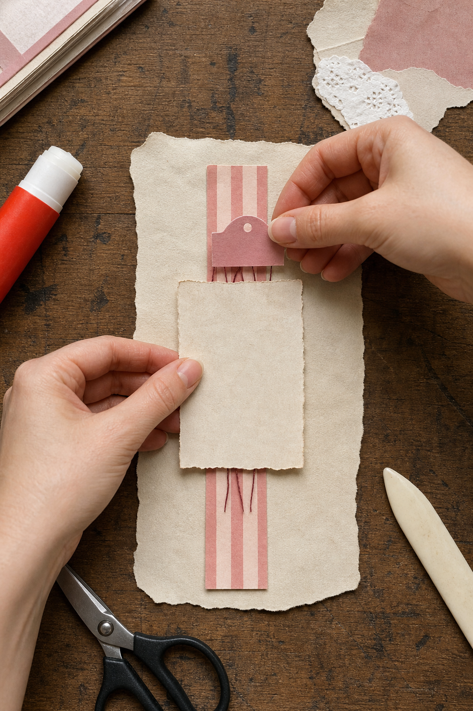

A good junk journal page rarely needs more supplies. It needs a clear order. This five-layer formula gives every scrap a job, so you can stop rearranging pieces and start gluing with confidence.
Gather a deliberately small pile
Choose one sheet for the base, one narrow strip, one focal piece, one flexible connector such as thread, and one tiny finishing detail. Keep the pile beside the page and return everything else to its drawer. Limiting the choice is part of the tutorial: it makes proportion easier to see.
Layer 1: create a quiet base
Tear a piece of ledger paper, book paper, or plain handmade paper so it covers roughly half to two-thirds of the page. This first layer does not need to be exciting. Its job is to soften the blank page and establish the main shape. Leave at least one generous area untouched.
Layer 2: add a directional strip
Place a narrow strip vertically or horizontally across part of the base. A strip of fabric, a torn margin, or a piece of patterned paper works beautifully. It should lead the eye toward the focal point, not divide the page exactly in half.

Layer 3: choose one focal piece
Add the piece you want someone to notice first: a photograph, botanical image, ticket, handwritten note, or small card. Let it overlap the first two layers. Overlap makes separate scraps feel like one composition. If the focal disappears, reduce the pattern behind it or slip a cream mat underneath.
Layer 4: bridge the hard edges
Thread, lace, tracing paper, a translucent label, or a loose pencil mark can connect rigid shapes. Run this flexible layer across two earlier pieces. It creates movement and prevents the page from feeling like a stack of rectangles.
Layer 5: finish with one small echo
Repeat a color or texture in a tiny place away from the main cluster. Try a fabric tab at the edge, a single stamp mark, a paper clip, or a short line of stitching. This echo helps the eye travel across the page. Stop after one or two repeats.
Use the lift test before gluing
Lift the smallest piece. If the page becomes calmer but loses no meaning, leave it out. Then lift the focal. If the whole page loses its purpose, the hierarchy is working. Photograph the arrangement, glue from the bottom layer upward, and allow slight imperfections to remain. Uneven tears and visible fibers are part of the journal’s voice.
Disclosure: The styled workspace and process photographs in this article were created with AI-assisted image tools and art-directed for this tutorial.